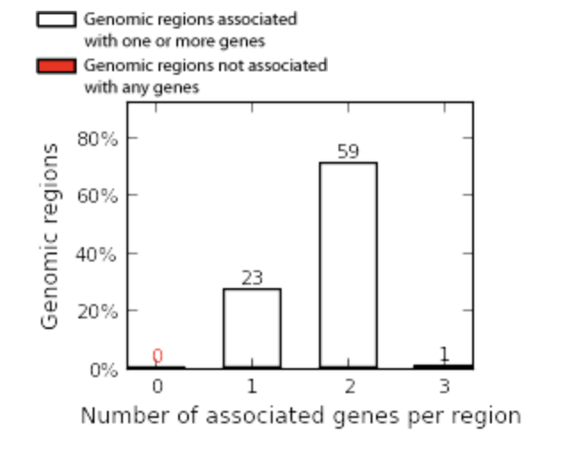
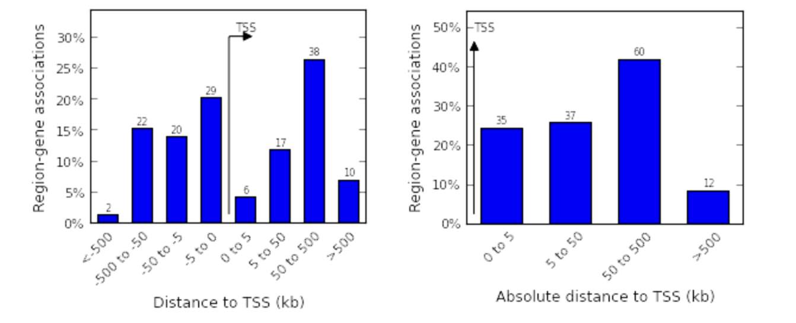
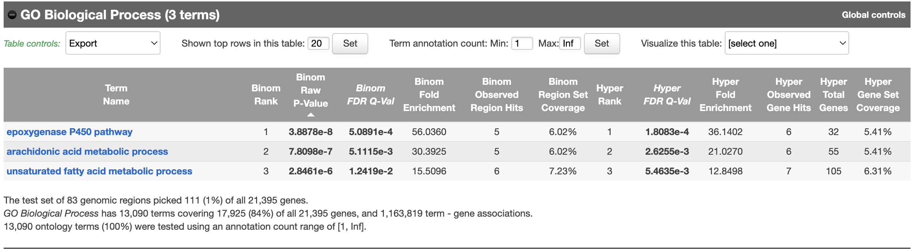
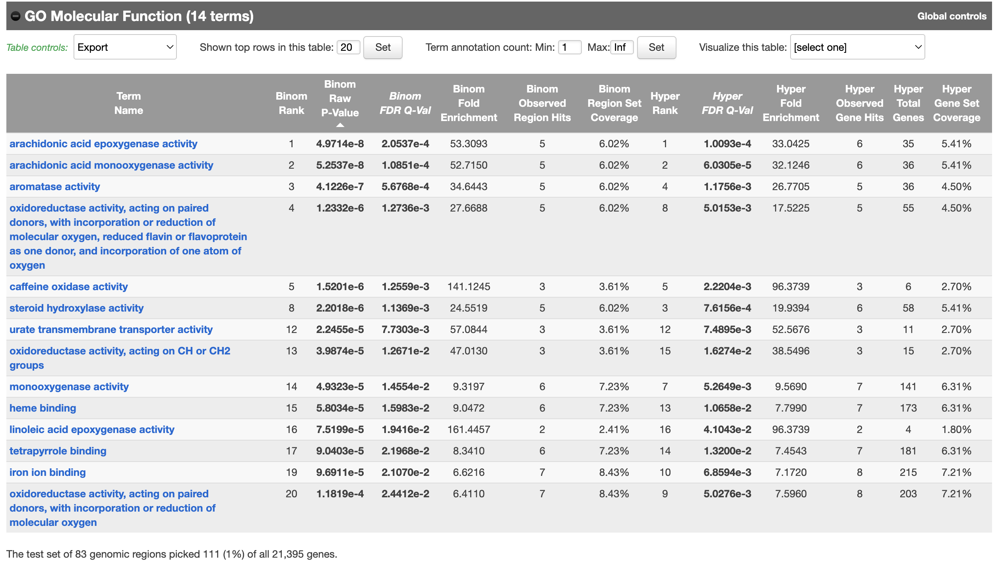

The Address Problem
Imagine you have a list of GPS coordinates — latitude and longitude numbers for 847 different locations. Those coordinates are precise, but they are meaningless until you overlay them on a map and discover that one is inside a hospital, another is in a parking lot, and a third is on the roof of a school. The coordinates have not changed, but now they have context. Now they mean something.
This is exactly the problem we face with our peaks. We have precise genomic coordinates, but we do not yet know whether they sit at gene promoters, inside gene bodies, between genes, or somewhere else entirely. Assigning peaks to genomic features is called peak annotation, and it is one of the most important interpretive steps in any ATAC-seq analysis.
The reason it matters so much is biological. A peak at a promoter — the region just upstream of where a gene starts — strongly suggests that the gene is being actively transcribed. A peak in an intergenic region far from any gene might mark an enhancer, a long-range regulatory element that controls gene expression from a distance. A peak inside a gene body could indicate alternative transcription or regulatory complexity. Where your peak is tells you something completely different about what is happening biologically.
To perform this annotation we will use GREAT, which stands for Genomic Regions Enrichment of Annotations Tool, developed at Stanford University. GREAT is a web-based tool — you submit your peak coordinates through a browser and it returns a comprehensive annotation report. This means no installation, no disk space requirements, and no compatibility issues with your Apple Silicon chip. It is widely used in published epigenomics research and is scientifically rigorous.
GREAT also does something that pure annotation tools do not: alongside telling you where your peaks are, it automatically asks which biological pathways and gene functions are enriched near those peaks. This means in a single submission you get both the positional annotation and a first-pass biological interpretation of what those open chromatin regions might be doing.
Verifying Your Peak File
Before we submit anything to a web tool, we need to confirm that our peak file is intact, properly formatted, and contains what we expect. This is the computational equivalent of running a quick Nanodrop before loading your sample on a gel — a simple sanity check before committing to the next step.
First, navigate to your project folder and make sure your environment is active:
cd ~/atacseq_og
conda activate bio-toolsNow let us confirm the peak file exists and check its size:
ls -lh results/peaks/ENCFF535OGL_peaks.narrowPeak
ls -lh lists files in long format with human-readable file sizes. You should see the file listed with a size in the range of a few kilobytes to a few hundred kilobytes. If the file is missing or shows 0 bytes, something went wrong in Chapter 8 and you would need to re-run MACS2.
Now confirm how many peaks are inside:
wc -l results/peaks/ENCFF535OGL_peaks.narrowPeakYou should see a number in the hundreds, consistent with what you found in Chapter 11. Now look at the first three lines to confirm the format:
head -3 results/peaks/ENCFF535OGL_peaks.narrowPeak
You will see tab-separated lines beginning with chr19 followed by coordinates and then additional columns containing decimal numbers — fold enrichment values and statistical scores that MACS2 adds to the file. These columns are useful for our own analysis as you saw in Chapter 11, but they create a problem for GREAT.
Preparing the File for GREAT
GREAT expects a clean BED file — specifically it reads the first three columns (chromosome, start, end) and interprets any additional columns as standard BED format fields which expect integers, not decimal numbers. When GREAT encounters the decimal values in columns 7, 8, and 9 of the narrowPeak format — the fold enrichment and p-value scores — it throws a formatting error and refuses to process the file.
The fix is straightforward. We strip the file down to just the three columns that GREAT actually needs, discarding everything else. Think of it like preparing a sample for a specific assay — you do not load your entire crude lysate onto a mass spectrometer, you first clean it up and give the instrument only what it is designed to receive.
awk '{print $1"\t"$2"\t"$3}' results/peaks/ENCFF535OGL_peaks.narrowPeak > results/peaks/peaks_for_GREAT.bed
This awk command reads every line of the narrowPeak file and prints only the first three columns — chromosome, start coordinate, and end coordinate — separated by tabs into a new file called peaks_for_GREAT.bed. All the decimal-containing statistical columns are simply dropped because GREAT has no use for them.
Verify the output looks correct:
head -3 results/peaks/peaks_for_GREAT.bedYou should now see clean three-column output with no decimal numbers anywhere:
chr19 3227088 3227464
chr19 4078350 4078550
chr19 4793955 4794155Confirm the number of peaks is preserved:
wc -l results/peaks/peaks_for_GREAT.bed
This number should match exactly what you saw when you ran wc -l on the original narrowPeak file. If the numbers differ, something went wrong with the awk command and you should run it again.
Understanding What GREAT Needs
GREAT works by associating each of your peaks with nearby genes using a regulatory domain model — essentially drawing a zone of influence around each gene and asking which peaks fall within that zone. For this to work correctly, GREAT needs to know which genome assembly your coordinates came from. As established in Chapter 7, all of our analysis used mm10. Submitting coordinates from mm10 to a tool configured for mm9 or mm39 would produce completely wrong associations, exactly like looking up a street address in the wrong city’s map.
Submitting to GREAT
Open your web browser and navigate to:
http://great.stanford.edu/public/html/You will see the GREAT submission page with a clean interface. Work through the fields in order.
Step 1 — Species Assembly: In the dropdown menu at the top, select Mouse: NCBI Build 38 (UCSC mm10). This must match the genome you used for alignment in Chapter 7.
Step 2 — Test Regions: Click “Choose File” under the “Upload a region file” section and navigate to results/peaks/peaks_for_GREAT.bed on your computer. This is the clean three-column file you just created. If the file upload button gives you trouble, you can alternatively print the file contents to your terminal and paste them directly into the text box:
cat results/peaks/peaks_for_GREAT.bed
cat prints the entire contents of a file to the terminal screen. You can then select all the output, copy it, and paste it into the GREAT text input box.
Step 3 — Background Regions: Leave this set to the default, which is “Whole genome.” This tells GREAT to compare your peaks against the entire mouse genome as background. In a more advanced analysis you might provide a custom background, but for this experiment the whole genome default is appropriate and standard.
Step 4: Click the Submit button.
GREAT will begin processing your submission. For a file this size the analysis typically takes between 30 seconds and 2 minutes. When the analysis is complete, GREAT will automatically redirect you to the results page.
Interpreting the Results Page
The Region-Gene Association Graphs
The first thing you see at the top of the results page is a set of three graphs under the heading “Region-Gene Association Graphs.” These tell you, before any biology, whether your peaks were successfully connected to genes and how far they sit from gene start sites.

The left graph — Number of associated genes per region shows how many genes each of your peaks was linked to. The majority of your peaks are associated with 2 nearby genes, a smaller fraction with 1 gene, and almost none are completely isolated from any gene. The small red bar at zero represents peaks that could not be connected to any gene — if this is zero it means GREAT successfully associated every single one of your peaks with at least one nearby gene. This is a good sign.

The middle and right graphs — Distance to TSS are the most important quality check in this section. They show how far your peaks are from the nearest Transcription Start Site — the exact point on the DNA where a gene begins to be read. Look at the right graph showing absolute distance. You will see that the largest category is peaks falling 50 to 500 kilobases from a TSS, followed by peaks at 0 to 5 kilobases, with a meaningful fraction at 5 to 50 kilobases.
This distribution is exactly what you expect from a healthy ATAC-seq experiment. Peaks very close to a TSS (0 to 5kb) represent open promoters — the immediate regulatory region where transcription machinery assembles. Peaks at 50 to 500kb represent distal enhancers — regulatory elements that control gene expression from a distance by physically looping through three-dimensional space to contact their target promoter. The fact that you see peaks spread across both categories tells you that your experiment captured both types of regulatory elements, which is precisely what ATAC-seq is designed to do.
GO Biological Process — What Pathways Are Enriched?
Scroll down to the section labeled “GO Biological Process.” The number in parentheses next to the heading tells you immediately how many biological process terms reached statistical significance. This number directly reflects the size of your dataset — because we only used Chromosome 19 in our toy dataset, statistical power is limited and you will see only a small number of significant terms. In a complete genome-wide experiment you would typically see dozens to hundreds of enriched terms. Do not interpret a small number here as a failure — it is a consequence of the deliberate trade-off made in Chapter 7 to keep the analysis accessible on a laptop.

The significant terms you will see are centered on the epoxygenase P450 pathway, arachidonic acid metabolic process, and unsaturated fatty acid metabolic process. Each row in this table contains several columns worth understanding:
Binom Rank — The rank of this term by binomial test significance. Rank 1 is the most significantly enriched term.
Binom Raw P-Value — The raw statistical significance before correction. Smaller means more significant.
Binom FDR Q-Val — The false discovery rate corrected p-value. This is the value you should use when deciding which results to trust. Any value below 0.05 is considered significant.
Binom Fold Enrichment — How many times more frequently this term appears near your peaks compared to what you would expect by chance from a random set of genomic regions. A fold enrichment of 56 means that genes associated with this pathway are 56 times more likely to be near your peaks than expected.
Binom Observed Region Hits — How many of your actual peaks contributed to this enrichment. This tells you whether the signal is coming from many peaks or just one or two.
Hyper FDR Q-Val and Hyper Fold Enrichment — The same statistics calculated using a hypergeometric test rather than a binomial test. When both the binomial and hypergeometric values agree and are both significant, you can be particularly confident in the result.
At first glance, seeing lipid metabolism and P450 pathways rather than classic immune terms like “inflammatory response” might seem surprising for a monocyte dataset. However this result makes complete biological sense when you consider the geography of the mouse genome. Chromosome 19 in mice contains a large cluster of Cytochrome P450 genes from the Cyp2 family. These enzymes are expressed in monocytes and macrophages and are directly involved in converting arachidonic acid into epoxyeicosatrienoic acids — anti-inflammatory lipid mediators that modulate immune cell responses. The open chromatin you detected on Chromosome 19 is sitting near these actively expressed P450 genes, which is exactly what you would expect in an immune cell. The fact that GREAT recovered this biologically coherent signal from a small number of peaks on a single chromosome is actually a strong validation that your pipeline worked correctly.
GO Molecular Function — What Are These Genes Doing at the Molecular Level?
The next section, “GO Molecular Function,” goes one level deeper and asks not what biological process these genes participate in, but what molecular activity they carry out at the biochemical level.

The top terms here — arachidonic acid epoxygenase activity, arachidonic acid monooxygenase activity, aromatase activity, and steroid hydroxylase activity — all describe the same family of enzymatic reactions: using molecular oxygen to chemically modify lipids and steroids. Further down the list you will see heme binding and iron ion binding, which makes sense because cytochrome P450 enzymes are heme-containing proteins that require iron at their active site to function.
These molecular function terms are internally consistent — they all point to the same underlying biology of the P450 gene cluster on Chromosome 19. When you see multiple independent terms from different parts of the ontology database all pointing toward the same biology, it is a strong indicator that the signal is real rather than statistical noise.
Sections Labeled “No Terms”
You will also notice several sections labeled “no terms” — Human Phenotype, Mouse Phenotype Single KO, and Mouse Phenotype. This simply means that with peaks from one chromosome, there was not enough statistical evidence to reach significance in these more specific phenotype databases. This is expected behavior for a toy dataset and not a cause for concern. In a full genome-wide experiment these sections would likely contain significant terms connecting your open chromatin regions to known mouse phenotypes and disease associations.
The Complete Picture from These Results
Stepping back, your GREAT results tell a coherent biological story. The peaks you called on Chromosome 19 are distributed across both proximal promoters and distal enhancers as expected for good quality ATAC-seq data. The genes near those peaks are enriched for cytochrome P450 and arachidonic acid metabolism functions, which reflects the known biology of the Cyp2 gene cluster on Chromosome 19 and is entirely consistent with monocyte gene expression. Every significant term points in the same biological direction, which is exactly the kind of internal consistency that distinguishes a successful experiment from noise.
In a full genome-wide experiment using all chromosomes, these same P450 terms would likely still appear but would be joined by many more immune-specific terms — toll-like receptor signaling, cytokine production, NF-κB pathway activation — that are distributed across other chromosomes not included in this toy analysis.
Saving Your Results
GREAT results are not permanent — the server will delete them after a period of time. Before closing the browser, save your results.
At the top of the results page, look for the “Global Export” dropdown menu and click it to save a full report of the analysis. Additionally, within each ontology table such as GO Biological Process and GO Molecular Function, look for the small “Export” dropdown on the left side of the table controls. Set it to “All data as text file” and click the export button to download each table as a plain text file.
Back in your terminal, create a dedicated folder for these results:
mkdir -p results/annotationMove the downloaded files into this folder. On macOS, files download to your Downloads folder by default:
mv ~/Downloads/GREAT_*.txt results/annotation/This keeps your results organized following the same principles established in Chapter 2.
Next Step
You have successfully annotated your peaks. You now know not just where your open chromatin regions are as raw coordinates, but what they are in genomic context — distributed across both proximal promoters and distal enhancers — and which biological pathways are enriched among the genes associated with them. You have gone from a list of genomic coordinates to a biologically coherent narrative about the regulatory landscape of mouse monocytes on Chromosome 19.
The next question is deeper and more mechanistic: who is responsible for opening this chromatin? Open chromatin does not open itself. Transcription factors bind to specific DNA sequences and recruit the machinery that displaces nucleosomes and creates accessibility. If we can identify which transcription factor binding motifs are enriched inside our peaks, we can make strong predictions about which transcription factors are active and driving the regulatory state of the cell. Answering that question requires extracting the actual DNA sequences from inside our peaks and submitting them to a motif analysis tool. That is exactly what we will do in Chapter 13.